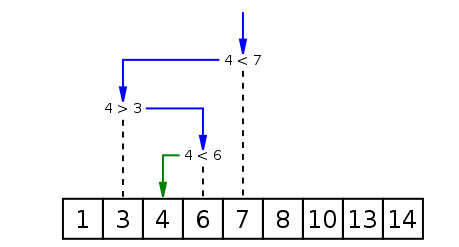

Leçon 2 : Exemple d'un premier Algorithme
Introduction
Dans cette leçon, nous allons voir un premier exemple d'algorithme en partant d'un problème simple.
🎯 Problème
L'objectif est de deviner un nombre entre 1 et 100.
🔹 À chaque tentative, nous savons si le nombre à deviner est plus grand ou plus petit que le nombre proposé.
Le problème consiste à chercher efficacement un élément dans un tableau trié :
[1, 2, 3, 4, ..., 100]
🔍 Recherche séquentielle (naïve)
L'approche naïve consiste à parcourir le tableau élément par élément :
function linearSearch(tableauTrie, tentative) {
for (let i = 0; i < tableauTrie.length; i++) {
if (tableauTrie[i] === tentative) {
return i;
}
}
return -1;
}
👉 Explication
- 🔍 On parcourt tous les éléments un par un.
- ✅ Si l’élément est trouvé, on retourne sa position.
- ❌ Sinon, on retourne
-1.
⚠️ Inconvénient : Cette méthode est lente pour des grands tableaux (O(n) en complexité).
🚀 Recherche dichotomique (Binary Search)
Pour un tableau trié, il existe un algorithme optimal : la recherche dichotomique (binary search).
🛠️ Principe
- Prendre l'élément du milieu du tableau.
- Comparer avec la valeur recherchée :
- ✅ Si égal, c’est gagné !
- 🔼 Si supérieur, on élimine la moitié droite du tableau.
- 🔽 Si inférieur, on élimine la moitié gauche du tableau.
- Répéter jusqu'à trouver l’élément (ou conclure qu'il n'existe pas).
🔎 Exemple : Chercher 4 dans un tableau trié
Prenons un tableau trié de 9 éléments :
[1, 3, 4, 7, 8, 10, 13, 14]
📈 Étapes
- Milieu =
7(position5). - ➡️
7 > 4, donc on élimine la partie droite. - Nouveau milieu =
3(position2). - ➡️
3 < 4, donc on élimine la partie gauche. - Nouveau milieu =
4(position3). - ✅ Trouvé !

📝 Implémentation en JavaScript
function binarySearch(tableauTrie, valeurRecherchee) {
let debut = 0;
let fin = tableauTrie.length - 1;
while (debut <= fin) {
let milieu = Math.floor((debut + fin) / 2);
if (tableauTrie[milieu] > valeurRecherchee) {
fin = milieu - 1;
} else if (tableauTrie[milieu] < valeurRecherchee) {
debut = milieu + 1;
} else {
return milieu;
}
}
return -1;
}
👉 Explication
debutetfinpermettent de garder en mémoire la zone de recherche.- Boucle while : tant qu'il reste des éléments, on cherche au milieu.
- Si la valeur recherchée est supérieure, on ajuste
debut. - Si inférieure, on ajuste
fin. - Si égale, on retourne la position.
✅ Complexité : O(log n) (beaucoup plus rapide que la recherche séquentielle !)
🔧 Comparaison des algorithmes
| Algorithme | Complexité | Avantage | Inconvénient |
|---|---|---|---|
| Recherche séquentielle | O(n) |
Simple à implémenter | Lente sur grands tableaux |
| Binary Search | O(log n) |
Très rapide sur tableaux triés | Nécessite un tri préalable |
💡 Conclusion
- La recherche séquentielle est simple mais inefficace pour de grandes bases de données.
- La recherche dichotomique est bien plus rapide (
O(log n)) mais ne fonctionne que sur un tableau trié. - Toujours privilégier la recherche dichotomique lorsque cela est possible pour des performances optimales.
💡 Ressources Complémentaires
- Documentation MDN sur les algorithmes de recherche
- Explication en vidéo sur la recherche dichotomique ```
✅ Caractéristiques du format :
- Compatible avec MkDocs 📘
- Code JavaScript bien formaté 📜
- Images et icônes pour une meilleure lisibilité 🎨
- Tableaux pour la comparaison des méthodes 📊
- Liens vers des ressources externes 🌍
Vous pouvez utiliser ce fichier tel quel dans votre documentation MkDocs ! 🚀